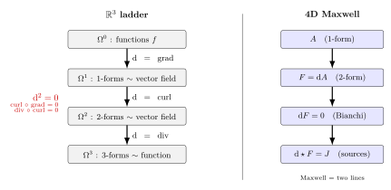

微分形式与外微分 — 怎么把 Maxwell 方程组写成两行?
在卷三 02《Maxwell》里, 我们写下了电磁学的四条方程. 在熟悉的三维 + 时间形式下它们长这样:
$$ \nabla\cdot\mathbf E = \rho,\qquad \nabla\times\mathbf B - \partial_t\mathbf E = \mathbf J,\qquad \nabla\cdot\mathbf B = 0,\qquad \nabla\times\mathbf E + \partial_t\mathbf B = 0. \tag{1} $$
一共四条, 各自带着 $\nabla\cdot$ 或 $\nabla\times$ 的不同算符. 而到了卷三相对论性版本里, 同一组方程被写成两行:
$$ \mathrm{d}F = 0,\qquad \mathrm{d}\star F = J. $$
从四行变两行不算什么, 真正惊人的是: 这两行并没有"漏掉"什么, 它们确实是 (1) 的等价改写; 而且, 这两行在任何 4 维时空 (无论平直还是弯曲) 上都成立, 形状不变. 这说明 $\nabla\cdot$、$\nabla\times$ 还有 $\partial_t$ 实际上是同一个数学对象在 $\mathbb R^3$ 中的三种不同投影 — 它们被一个更深的微积分统一了. 这门微积分叫外微分, 它的对象叫微分形式. 本节把它从最基础的几何意义讲起.
一、$k$-form 是什么? 从面积、体积说起
先抛开抽象定义, 想一个最具体的几何问题: 在 $\mathbb R^2$ 里给两个矢量 $u,v$, 它们撑出一个平行四边形, 面积怎么算? 答案是行列式
$$ \omega(u,v) = u_1 v_2 - u_2 v_1. $$
这个 $\omega$ 有几个赤裸的特征: 它把两个矢量打成一个数; 它对每个变量分别是线性的; 它反对称 — 交换 $u,v$ 变号 $\omega(u,v)=-\omega(v,u)$ (符号告诉你定向). 把这三条钉死, 它就是 $\mathbb R^2$ 上的一个2-form.
把"二维平面 + 面积"换成"任意流形 + 任意阶反对称多重线性形式", 一般定义就出来了. 在一个 $n$ 维流形 $M$ 上, 一个 $k$-form 是一个截面 $\omega$, 它在每个点 $p\in M$ 上给出一个映射
$$ \omega_p:\underbrace{T_pM\times\cdots\times T_pM}_{k\text{ 个}}\to\mathbb R, $$
满足: 每个变量分别线性; 任意两个变量互换变号 (反对称). $k$-form 的全体记作 $\Omega^k(M)$.
把这一句话翻成具体的标记, 在局部坐标 $(x^1,\dots,x^n)$ 下, $\Omega^k(M)$ 的一组基底是 $\{\mathrm dx^{i_1}\wedge\cdots\wedge\mathrm dx^{i_k}:i_1\lt \cdots\lt i_k\}$. 任何 $k$-form 都展开成
$$ \omega = \sum_{i_1\lt \cdots\lt i_k}\omega_{i_1\cdots i_k}(x)\,\mathrm dx^{i_1}\wedge\cdots\wedge\mathrm dx^{i_k}. $$
分量 $\omega_{i_1\cdots i_k}$ 是普通光滑函数, 楔积 $\wedge$ 是反对称的乘法 (下文会单独讲). 几个特别的阶:
- $k=0$: $\Omega^0(M)$ 就是流形上的光滑函数. 一个数函数已经"反对称"地接 $0$ 个矢量打出一个数.
- $k=1$: 1-form 就是余切矢量场, 在一点上是一个线性泛函 $T_pM\to\mathbb R$. 写成 $\omega = \omega_i(x)\,\mathrm dx^i$.
- $k=n$: $n$-form 叫 top form, 它在 $n$ 维流形上独此一阶, 跟体积元有亲缘 — 比如 $\mathbb R^3$ 上 $\mathrm dx\wedge\mathrm dy\wedge\mathrm dz$.
- $k\gt n$: 反对称化成 $0$, 没有这一阶 — 你不可能在 3 维空间里挑 4 个不同坐标轴.
注意 1-form 在通常物理里被写成 "一个矢量场", 这是借助度规偷偷做了一次 升降指标: 一个矢量场 $\mathbf A=A^i\partial_i$ 在度规 $g$ 下对应 1-form $A_i\,\mathrm dx^i$, 其中 $A_i = g_{ij}A^j$. 在欧氏度规下分量数值一样, 直觉上不分; 但在弯曲空间或闵氏度规下两者真的不同. 这个区别在卷三 17《广义协变》里悄悄出现过, 这里把它点明.
二、楔积与外微分 $\mathrm{d}$
有了 $k$-form, 接着要两件工具: 一是把两个 form 接成更高阶 form 的乘法 (楔积 $\wedge$), 二是把一个 $k$-form 微分成 $(k+1)$-form 的算符 (外微分 $\mathrm{d}$).
楔积 $\wedge$. 对 $\alpha\in\Omega^k$ 与 $\beta\in\Omega^l$, 定义 $\alpha\wedge\beta\in\Omega^{k+l}$ 为反对称化的张量积. 关键性质:
$$ \alpha\wedge\beta = (-1)^{kl}\,\beta\wedge\alpha. \tag{2} $$
当 $k$ 与 $l$ 至少一个是偶数时, $\alpha\wedge\beta=\beta\wedge\alpha$ (交换); 当二者都是奇数时, $\alpha\wedge\beta=-\beta\wedge\alpha$ (反交换). 推论: 任一奇阶 form 自己跟自己楔积为 $0$, 即 $\alpha\wedge\alpha=0$ 当 $k$ 奇 — 比如 1-form 中 $\mathrm dx\wedge\mathrm dx=0$. 偶阶 form 不一定; 比如 $\mathbb R^4$ 中 $\mathrm dx\wedge\mathrm dy + \mathrm dz\wedge\mathrm dw$ 与自己楔积是 $2\,\mathrm dx\wedge\mathrm dy\wedge\mathrm dz\wedge\mathrm dw$.
外微分 $\mathrm{d}$. 这是把 $\Omega^k\to\Omega^{k+1}$ 的线性算符. 它的定义其实极朴素 — 在 $0$-form (函数) 上就是普通的全微分
$$ \mathrm df = \frac{\partial f}{\partial x^i}\,\mathrm dx^i, $$
在更高阶上由两条法则推出来:
- Leibniz: $\mathrm d(\alpha\wedge\beta) = \mathrm d\alpha\wedge\beta + (-1)^k\,\alpha\wedge\mathrm d\beta$ (其中 $k$ = $\alpha$ 的阶).
- 幂零性: $\mathrm d\circ\mathrm d = 0$, 即对任何 form $\omega$,
$$ \mathrm{d}^2\omega = 0. \tag{3} $$
(3) 是本节灵魂中的灵魂. 它的本质就是混合偏导数对称: $\partial_i\partial_j f = \partial_j\partial_i f$ — 当你把这条对称性接进反对称的 $\wedge$, 它就退化成 $0$. 验一次最简单的: 取 $\omega = f\,\mathrm dx$, 则
$$ \mathrm d\omega = \mathrm df\wedge\mathrm dx = \partial_y f\,\mathrm dy\wedge\mathrm dx + \partial_z f\,\mathrm dz\wedge\mathrm dx, $$
$$ \mathrm{d}^2\omega = \partial_z\partial_y f\,\mathrm dz\wedge\mathrm dy\wedge\mathrm dx + \partial_y\partial_z f\,\mathrm dy\wedge\mathrm dz\wedge\mathrm dx = 0, $$
因为 $\mathrm dy\wedge\mathrm dz = -\mathrm dz\wedge\mathrm dy$, 而二阶混合偏导对称, 两项严丝合缝抵消.
把 $\mathrm{d}^2=0$ 看成一个生产力公式: 凡是能写成 $\mathrm d\alpha$ 的 form (叫恰当 form), 它的 $\mathrm d$ 自动为零 (叫闭 form). 反过来, "闭的是不是都恰当"是个非平凡的问题 — 它的答案就是 de Rham 上同调, 留到第四节讲.

三、动手算: $\mathbb R^3$ 中 $\mathrm{d}$ 阶梯就是 grad-curl-div
现在我们正经在 $\mathbb R^3$ 里把 $\mathrm{d}$ 阶梯算一遍, 验明它就是常见的 grad、curl、div 串成的链. 取坐标 $(x,y,z)$.
$\mathrm{d}$: 0-form $\to$ 1-form. 取 $f(x,y,z)$ 是普通函数, 则
$$ \mathrm df = \partial_x f\,\mathrm dx + \partial_y f\,\mathrm dy + \partial_z f\,\mathrm dz. $$
分量正是 $\nabla f = (\partial_x f,\partial_y f,\partial_z f)$. 所以这一阶的 $\mathrm{d}$ 等同于梯度 grad.
$\mathrm{d}$: 1-form $\to$ 2-form. 取一个 1-form $A = A_x\,\mathrm dx + A_y\,\mathrm dy + A_z\,\mathrm dz$. 直接算:
$$ \begin{aligned} \mathrm dA &= \mathrm dA_x\wedge\mathrm dx + \mathrm dA_y\wedge\mathrm dy + \mathrm dA_z\wedge\mathrm dz \\ &= (\partial_y A_x\,\mathrm dy+\partial_z A_x\,\mathrm dz)\wedge\mathrm dx \\ &\quad +(\partial_x A_y\,\mathrm dx+\partial_z A_y\,\mathrm dz)\wedge\mathrm dy \\ &\quad +(\partial_x A_z\,\mathrm dx+\partial_y A_z\,\mathrm dy)\wedge\mathrm dz \\ &= (\partial_x A_y - \partial_y A_x)\,\mathrm dx\wedge\mathrm dy \\ &\quad +(\partial_y A_z - \partial_z A_y)\,\mathrm dy\wedge\mathrm dz \\ &\quad +(\partial_z A_x - \partial_x A_z)\,\mathrm dz\wedge\mathrm dx. \end{aligned} $$
三个系数正是 $(\nabla\times\mathbf A)_z$、$(\nabla\times\mathbf A)_x$、$(\nabla\times\mathbf A)_y$. 所以这一阶的 $\mathrm{d}$ 就是旋度 curl — 不过它的输出不是矢量场而是 2-form, 这两个对象通过 $\mathbb R^3$ 的 Hodge star $\star$ (下面讲) 互为表里.
$\mathrm{d}$: 2-form $\to$ 3-form. 取 2-form $\beta = B_z\,\mathrm dx\wedge\mathrm dy + B_x\,\mathrm dy\wedge\mathrm dz + B_y\,\mathrm dz\wedge\mathrm dx$ (我故意把分量用 $B_i$ 而不是 $\beta_{ij}$ 写, 提示它跟一个 $\mathbf B$ 矢量场一一对应). 算:
$$ \begin{aligned} \mathrm d\beta &= \partial_z B_z\,\mathrm dz\wedge\mathrm dx\wedge\mathrm dy \\ &\quad +\partial_x B_x\,\mathrm dx\wedge\mathrm dy\wedge\mathrm dz \\ &\quad +\partial_y B_y\,\mathrm dy\wedge\mathrm dz\wedge\mathrm dx \\ &= (\partial_x B_x+\partial_y B_y+\partial_z B_z)\,\mathrm dx\wedge\mathrm dy\wedge\mathrm dz, \end{aligned} $$
因为三个 wedge 重排都给同一个 $\mathrm dx\wedge\mathrm dy\wedge\mathrm dz$. 系数正是 $\nabla\cdot\mathbf B$. 所以这一阶的 $\mathrm{d}$ 就是散度 div.
三步走完, 我们看到
$$ \Omega^0\xrightarrow{\mathrm d=\mathrm{grad}}\Omega^1\xrightarrow{\mathrm d=\mathrm{curl}}\Omega^2\xrightarrow{\mathrm d=\mathrm{div}}\Omega^3 $$
是一条统一的链. $\mathrm{d}^2=0$ 直接读成两条物理课本里的恒等式: $\mathrm{curl}\circ\mathrm{grad} = 0$ ($\nabla\times\nabla f = 0$) 与 $\mathrm{div}\circ\mathrm{curl} = 0$ ($\nabla\cdot(\nabla\times\mathbf A) = 0$). 三个不同的算子原来是同一个外微分换了帽子.
Hodge star $\star$. 上面的"对应"用了一件还没讲的工具. 在带定向、带度规的 $n$ 维流形上, Hodge star $\star:\Omega^k\to\Omega^{n-k}$ 把 $k$-form 翻成 $(n-k)$-form. 在 $\mathbb R^3$ 上欧氏度规下:
$$ \star\,\mathrm dx = \mathrm dy\wedge\mathrm dz,\qquad \star\,\mathrm dy = \mathrm dz\wedge\mathrm dx,\qquad \star\,\mathrm dz = \mathrm dx\wedge\mathrm dy, $$
$$ \star(\mathrm dx\wedge\mathrm dy\wedge\mathrm dz) = 1. $$
它就是把 1-form 与 2-form 的"指标"在 3 维下捏成一对. 矢量场 $\leftrightarrow$ 1-form $\leftrightarrow$ 2-form 这个三明治, 物理上就是"把 $\mathbf A$ 当矢量"还是"把 $\mathrm dA$ 当面通量场"的灵活换面.
四、流形上的 Stokes 定理与 de Rham 上同调
外微分还有一桩绝活, 把积分跟边界钉到一起: 流形上的 Stokes 定理. 设 $M$ 是带定向的 $k$ 维流形 (允许带边界 $\partial M$), $\omega$ 是 $M$ 上一个光滑 $(k-1)$-form, 则
$$ \int_M \mathrm d\omega = \int_{\partial M}\omega. \tag{4} $$
这一行把卷四 04《Stokes 与 Gauss》里见过的三条定理一次性吞掉. 取 $M$ = $\mathbb R^3$ 中一段曲线 (带两端点), $\omega$ = 函数 $f$ (0-form), 得到微积分基本定理 $\int_a^b f' = f(b)-f(a)$. 取 $M$ = 一片曲面, $\omega$ = 1-form, 得到 Stokes 定理 $\iint_S \nabla\times\mathbf A\cdot\mathrm d\mathbf S = \oint_{\partial S}\mathbf A\cdot\mathrm d\boldsymbol\ell$. 取 $M$ = 三维体, $\omega$ = 2-form, 得到 Gauss 散度定理 $\iiint_V \nabla\cdot\mathbf B\,\mathrm dV = \oiint_{\partial V}\mathbf B\cdot\mathrm d\mathbf S$. 三件事原本各自训练, 现在统一在 (4) 这一句里. "$\mathrm d$ 升阶, 边界 $\partial$ 降维, 二者对偶" — 这个对偶在拓扑学上叫 上下同调对偶 (de Rham/Poincaré duality).
顺便, $\mathrm{d}^2=0$ 与 $\partial^2 = 0$ (闭曲面没边界, 边界的边界为空) 是同一回事的两面: $\partial(\partial M)=\varnothing$ 翻成积分语言就是 $\int_{\partial(\partial M)}\omega = 0$, 用一次 (4) 就推出 $\int_M \mathrm{d}^2\omega = 0$. 所以 $\mathrm{d}^2=0$ 不是手算才发现的算术巧合, 而是"边界的边界为空"这条几何事实.
de Rham 上同调. 既然 $\mathrm{d}^2=0$, 我们就有"恰当 form $\subseteq$ 闭 form": 凡是写得成 $\mathrm d\alpha$ 的, 它的 $\mathrm d$ 一定为零. 反过来"闭的能不能写成恰当的"? 在 $\mathbb R^n$ 上 (Poincaré 引理) 答案肯定; 但在有"洞"的流形上不一定. 这种过剩, 由
$$ H^k(M) := \frac{\ker(\mathrm d:\Omega^k\to\Omega^{k+1})}{\mathrm{im}(\mathrm d:\Omega^{k-1}\to\Omega^k)} \tag{5} $$
度量 — $H^k(M)$ 叫 $M$ 的第 $k$ 个 de Rham 上同调群. 它的维数 ${\rm dim}\,H^k(M) = b_k$ 叫 Betti 数, 是个纯拓扑不变量, 跟你选什么度规没关系. 一个具体例子: $\mathbb R^2\setminus\{0\}$ (挖掉原点的平面) 上 1-form $\omega = (-y\,\mathrm dx+x\,\mathrm dy)/(x^2+y^2)$ 是闭的 ($\mathrm d\omega=0$ 直接算可知), 但绕原点积分得 $2\pi\neq 0$, 所以它不是恰当的 — 这一非平凡的 $H^1$ 直接对应"原点这个洞". de Rham 1931 年的论文严格证明了 $H^k(M)$ 等同于 $M$ 的奇异上同调 — 微分语言与拓扑语言此地接上.
五、4D 时空: $F=\mathrm dA,\ \mathrm dF=0,\ \mathrm d\star F=J$
所有工具备齐, 终于能回到开篇. 在 4 维时空 (闵氏度规, 坐标 $(t,x,y,z)$) 上, 电磁势 $A_\mu$ 看成 1-form
$$ A = -\phi\,\mathrm dt + A_x\,\mathrm dx + A_y\,\mathrm dy + A_z\,\mathrm dz. $$
取它的外微分 $F := \mathrm dA$, 得到一个 2-form. 算分量: $\mathrm d(-\phi\,\mathrm dt) = -\partial_x\phi\,\mathrm dx\wedge\mathrm dt - \dots$, 串完后正好就是电磁场张量 $F_{\mu\nu}$, 其中 $F_{0i} = -E_i$, $F_{ij} = \epsilon_{ijk}B^k$. 所以
$$ F = E_x\,\mathrm dt\wedge\mathrm dx + E_y\,\mathrm dt\wedge\mathrm dy + E_z\,\mathrm dt\wedge\mathrm dz + B_z\,\mathrm dx\wedge\mathrm dy + B_x\,\mathrm dy\wedge\mathrm dz + B_y\,\mathrm dz\wedge\mathrm dx. $$
第一组方程: 直接由 $\mathrm{d}^2=0$ 得到
$$ \mathrm dF = \mathrm{d}^2A = 0. $$
展开成分量, 这一行就是 Maxwell 方程组 (1) 中的 $\nabla\cdot\mathbf B=0$ 和 $\nabla\times\mathbf E + \partial_t\mathbf B=0$ (Bianchi 类两条). 注意它是几何恒等式, 不依赖任何度规、不依赖任何源 — 只要你写 $F=\mathrm dA$ (有势), $\mathrm dF=0$ 就免费送你两条 Maxwell.
第二组方程: 引入 4D Hodge star $\star$, 它把 2-form 换成另一个 2-form (因为 $4-2=2$); 在闵氏度规下 $\star F$ 把 $\mathbf E$ 与 $\mathbf B$ 互换 (附带正负号). 把电流 4-矢看成 3-form $J=\rho\,\mathrm dx\wedge\mathrm dy\wedge\mathrm dz - J^x\,\mathrm dt\wedge\mathrm dy\wedge\mathrm dz - \dots$, 那么
$$ \mathrm d\star F = J $$
展开成分量正是 (1) 剩下的两条 $\nabla\cdot\mathbf E=\rho$ 和 $\nabla\times\mathbf B - \partial_t\mathbf E = \mathbf J$. 这两条带源, 它们依赖度规 (因为 $\star$ 用度规) — 这与"电磁与时空因果结构耦合"的物理直觉吻合.
顺带送一份赠品: 对 $\mathrm d\star F = J$ 两边再 $\mathrm d$ 一次, 由 $\mathrm{d}^2=0$ 得 $\mathrm dJ = 0$. 这就是电荷守恒 $\partial_t\rho + \nabla\cdot\mathbf J = 0$. 也就是说, 电荷守恒不是一条独立公设, 而是 Maxwell 方程经由 $\mathrm{d}^2=0$ 自动给出 — 这件事在 $3+1$ 形式下需要用一行计算, 在外微分语言里只需一句 "再做一次 $\mathrm d$".
六、物理回响 (卷三 02/03/19) 与历史 (Cartan 1899, de Rham 1931)
这套语言在前三卷哪里出现过, 各举一处:
卷三 02《Maxwell》. 把电磁理论压成 $\mathrm dF=0,\ \mathrm d\star F=J$ 是这套语言的自带产品. 更进一步, 当你把电磁推广到 Yang-Mills 时, 1-form $A$ 升级成取值于 Lie 代数的 1-form, 场强变成 $F=\mathrm dA + A\wedge A$ — 多出来的二次项就是非阿贝尔本质. 卷三 19《anomaly》中那个 $\Tr(F\wedge F)$ topological term, 几何上正是一个闭 4-form, 它的积分就是一个示性数 (Chern 数), 其拓扑性来源就是 (4) 与 (5).
卷三 03《Feynman 传播子》. 路径积分中的体积元 $\mathrm d^4 k$ 写成 4-form 是 $\mathrm dk^0\wedge\mathrm dk^1\wedge\mathrm dk^2\wedge\mathrm dk^3$ — 这跟我们 top form 的概念一致. 4 维时空积分天然是 4-form 的积分, 卷三 03 里反复出现的 "正定向" 就是它的隐含约定.
卷一 04《光的弯曲》、卷三 17《广义协变》. 在弯曲时空上度规 $g_{\mu\nu}$ 决定 $\star$, $\star$ 决定 Maxwell 第二组方程的形式. 这就是为什么 "GPS 卫星上电磁场要修正" — 不是 Maxwell 的形式变了, 而是 $\star$ 借度规感受到了弯曲. Stokes 定理 (4) 在弯曲时空照样成立, 这是为什么积分守恒律在弯曲时空依然能写下来 (代价是要小心 "向量" 的协变性, 见上一节连接的概念).
历史: Cartan 1899. Élie Cartan 1899 年的论文《Sur certaines expressions différentielles》第一次系统引入"外微分"与楔积运算 (他叫做 "扩展微分形式" — 法语 "formes différentielles extérieures"); 1922 年起他用这套语言重写微分几何与广义相对论 (Cartan 联络、活动标架法). Cartan 不仅是发明者, 而且是那个时代少数能从代数与拓扑两侧同时驾驭这套形式的人 — 后来 Lie 代数的几何形式(Lie 群在李代数上的 Maurer-Cartan 形式)也是他的手笔, 卷四 14《Lie 代数》里我们碰到过.
历史: de Rham 1931. 瑞士数学家 Georges de Rham 1931 年的博士论文证明了一个划时代的定理: 流形上由 (5) 定义的 $H^k(M)$ 恰好等于该流形的奇异上同调群 $H^k(M;\mathbb R)$. 这件事的份量是: 你完全可以靠"摆 $\mathrm d$"算出一个流形的拓扑不变量. 后来 Atiyah-Singer 指标定理、Donaldson 理论、规范场拓扑分类, 都建在 de Rham 这一步之上.
历史: 物理化 — Misner-Thorne-Wheeler 1973. 这套语言长期被关在数学系里, 真正进物理课堂是 Misner, Thorne, Wheeler 1973 年合著的《Gravitation》("电话簿") 大段使用微分形式重写广义相对论. 之后几十年里, 弦论 (D-brane 与 B-form 的耦合 $\int B$, 与 (4) 相关)、规范理论的 BRST 复形、几何相 (Berry connection) 一个接一个把外微分推到物理日常.
小结
本节用 $k$-form 锁住了"反对称多重线性"的几何骨架, 用楔积 $\wedge$ (2) 与外微分 $\mathrm d$ 把它推成一个微积分, 用 $\mathbb R^3$ 中的具体计算验明 $\mathrm d$ 阶梯就是 grad-curl-div 链 — 其上 $\mathrm{d}^2=0$ (3) 自动给出"$\mathrm{curl}\circ\mathrm{grad}=0$"与"$\mathrm{div}\circ\mathrm{curl}=0$". Stokes 定理 (4) 把三个老定理一次性吞掉, de Rham 上同调 (5) 把"闭/恰当"的差距升级成拓扑不变量. 在 4D 时空上, Maxwell 方程被压成 $\mathrm dF=0$ 与 $\mathrm d\star F=J$, 电荷守恒沦为 $\mathrm{d}^2=0$ 的自动赠品 — 这就是卷三 02《Maxwell》里那两行紧凑式背后的全部数学. 下一节我们把舞台从微分几何切到泛函分析, 进入 Hilbert 空间, 解释量子力学为什么必然落在这个数学结构上.
▲